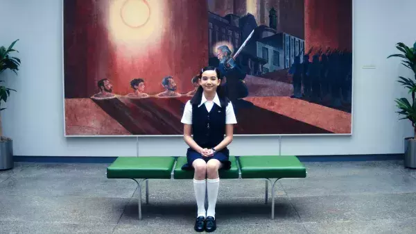

一、叙事深化：从记忆切割到意识殖民的范式升级
《人生切割术》第二季（2025）在首季豆瓣9.1分的神剧基础上，将记忆切割术的伦理困境推向更复杂的意识殖民维度。卢蒙公司（Lumon Industries）的"cold harbor"计划首次曝光——这项旨在通过量子纠缠技术实现意识跨维度移植的终极实验，将人类意识切割为可编程的数据模块，标志着技术异化从肉体规训转向精神殖民的质变。
1.1 反抗的消解与制度韧性
首季结尾的"宏观数据起义"在第二季被系统性地瓦解。四人组的反抗被制作成萌系宣传视频，基努·里维斯配音的卡通卢蒙大厦将严肃抗争转化为娱乐消费品，有效地实现了抗争的卡通化消解。与此同时，制度的韧性表现在结构性收编上：迪伦因家庭经济压力被迫妥协，埃尔文因情感创伤陷入自我怀疑，海莉（赫莉）的继承人身份暴露导致信任体系的全面崩塌。空间重构也成为反抗消解的重要手段，新增的"草坪办公室"通过人造自然景观制造虚假疗愈空间，其2cm误差的绿植方阵精确地隐喻了秩序对混乱的绝对压制。
1.2 技术迭代的黑暗跃进
量子决策系统的引入使伊根家族的会议呈现出量子叠加态，决策过程同时存在"通过"与"否决"状态，直到观测行为锁定结果——这是对海森堡不确定性原理的恐怖应用。意识移植实验则显示马克亡妻杰玛被证实为"cold harbor"初期实验体，其意识被移植至新躯体，但保留着对马克的情感记忆，制造出存在论层面的伦理悖论。更为惊人的是童工系统的上线：新角色黄小姐的"合法童工"身份，揭示卢蒙已突破生物年龄限制，实现意识资源的全周期开采。

二、角色解构：存在主义危机下的多重自我
2.1 马克·S的认知迷宫
马克的丧妻创伤从首季的逃避对象变为主动探索动力，工作人格对海莉产生情感依赖，形成"创伤-成瘾"闭环，展示了创伤依存的心理机制。同时，主体性撕裂表现为外部人格发现妻子存活证据（杰玛的婚戒刻字），内部人格却与海莉建立新情感纽带，导致同一身体承载双重爱情悖论，这种矛盾构成了马克身份认同的核心困境。
2.2 海莉·R的身份困局
作为伊根家族长女，海莉面临继承人陷阱：其外部人格海伦娜持续监控内部人格海莉，形成"自我监视"的终极异化形态。语言暴力则体现在她被迫在公开演讲中否认工作人格真实性（"那些痛苦都是必要的成长"），完成对自我意识的符号学谋杀，这种自我否定构成了海莉存在的深层悖论。
2.3 迪伦·G的阶级坠落
迪伦经历了中产幻灭：从首季的"华夫饼派对"狂热者，到因反抗行动失去医保和育儿津贴，折射出美国中产阶级安全网的崩塌。身体政治层面，在"家庭日"活动中，妻子通过展示育儿账单完成对迪伦的二次规训，揭示消费主义如何成为新型控制手段，家庭经济压力成为维持社会秩序的隐性力量。
三、空间政治学：建筑作为意识规训装置
3.1 贝尔实验室的幽灵
剧中卢蒙总部原型——新泽西贝尔实验大楼（1962）的包豪斯主义设计被赋予新含义。镜面幕墙由上千块独立玻璃构成的立面，既反射自然景观又阻隔真实世界，成为隔离意识的物理屏障。迷宫效应则体现在员工在20万平方米空间中的寻路困难，隐喻后现代职场的信息过载困境。死亡凝视通过蜂窝状通风系统与《1984》电幕形成跨时空对话，每个孔洞都是数字化全景敞视监狱的观测点，实现了物理空间的意识规训功能。
3.2 新怪谈美学的渗透
永恒走廊以无限延伸的红色走廊与《控制》的太古屋形成互文，数据清洁工的防护服造型致敬SCP基金会的认知危害收容措施，建构了现代怪谈美学。量子焚化炉中焚烧文件的蓝色火焰实为意识数据的格式化程序，呼应齐泽克"象征界排泄物"理论，将物理程序与哲学观念融为一体。
四、哲学图谱：从福柯到拉康的认知革命
4.1 意识商品化的三重异化
意识异化表现为三个层级：第一层是记忆分割（工作/生活人格），对应黑格尔主奴辩证法；第二层是情感剥离（杰玛的机械性存在），呼应海德格尔"存在的沉沦"；第三层是意识移植（cold harbor计划），体现鲍德里亚拟像理论。这三重异化构成了从身体到意识的全方位商品化过程。
4.2 拉康镜像理论的恐怖演绎
误认机制表现为工作人格将公司手册的规章制度内化为"象征界父亲"，形成比真实父亲更强大的超我压制。实在界创伤则发生在迪伦触摸到孩子的实体（而非记忆影像）时，遭遇拉康所谓"实在界对符号界的暴力闯入"，将心理分析理论转化为具体的叙事事件。
五、制作考据：细节构筑的认知迷局
5.1 隐喻编码系统
数字炼金术体现在每个文件编码对应特定意识模块（如"MDR-21F"指向21世纪恐惧心理）。色彩政治学则通过工作区冷蓝色调与外部世界暖黄色的对立，在第二季被混合成病态灰绿色，暗示界限崩塌，视觉元素成为叙事的有机组成部分。
5.2 拍摄技术革新
量子摄影使用Schmidt-Cassegrain量子镜头捕捉人物意识波动，马克的2分40秒长镜头实际由57个数字替身拼接完成，技术与叙事相互强化。声音拓扑学方面，电梯提示音采用12平均律外的19-TET音阶，制造潜意识层面的迷失感，声音设计成为叙事的隐性力量。
结语：赛博格时代的意识考古学
当卢蒙公司将人类意识转化为可存储、可移植、可删除的数据包，《人生切割术》第二季完成了对笛卡尔"我思故我在"的终极解构。剧中那道贯穿混凝土墙的有机裂缝，既是控制系统的熵增裂痕，也是哈拉维"赛博格宣言"的现实映照——在意识殖民已成常态的后人类纪元，反抗或许不在于夺回记忆，而在于学会与多重自我共存。
正如编剧丹·埃里克森在访谈中揭示的终极命题："当'我'成为可量产的工业品，还有哪个'我'有资格说'我们并不活在戏里'？"这既是卢蒙员工的困局，也是算法时代全体数字劳工的共同困境。
本文原载于机核，完整保留原文正文。
查看机核原文 ↗